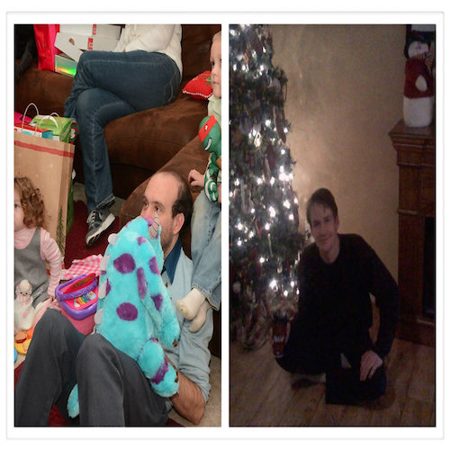
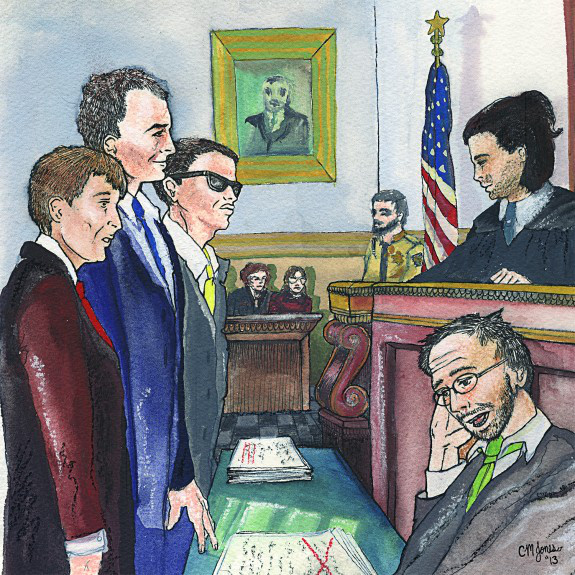
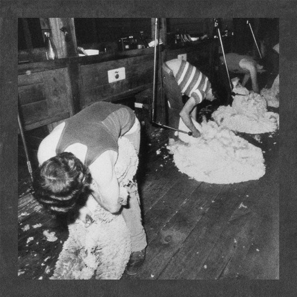

2014
<a href="http://dinnermusic.bandcamp.com/album/the-living-stereo">The Living Stereo by Rick Weaver from split with Spiritual Recess</a>

<a href="http://zackkounsandrickweaver.bandcamp.com/album/far-as-the-curse-is-found-celebrating-the-christmas-spirit-with-zack-kouns-and-rick-weaver">Far as the Curse is Found: Celebrating the Christmas Spirit with Zack Kouns and Rick Weaver by Zack Kouns & Rick Weaver</a>


<a href="http://humanconduct.bandcamp.com/album/banana-ham">Banana Ham by The Sonic Youth Boys</a>